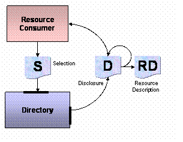

A disclosure instance is potentially a container of an arbitrarily long chain of registration events. A resource description registered under registry R1 can be discovered under directory D2 as an instance of disclosure, subsequently registered again under another registry (possibly an registry supporting aggregated offers in a particular domain) and finally discovered by another consumer. The resulting disclosure instance maintains an internal record of its passage of registration through R1 and R2. This information is particularly relevant to supplier organizations in terms of tracking of advertising and channels management. Supplier organizations can take advantage of this chain information by structuring server applications to take disclosure instances as input arguments.
Conversion of a selection instance to a disclosure chain and resource description.
